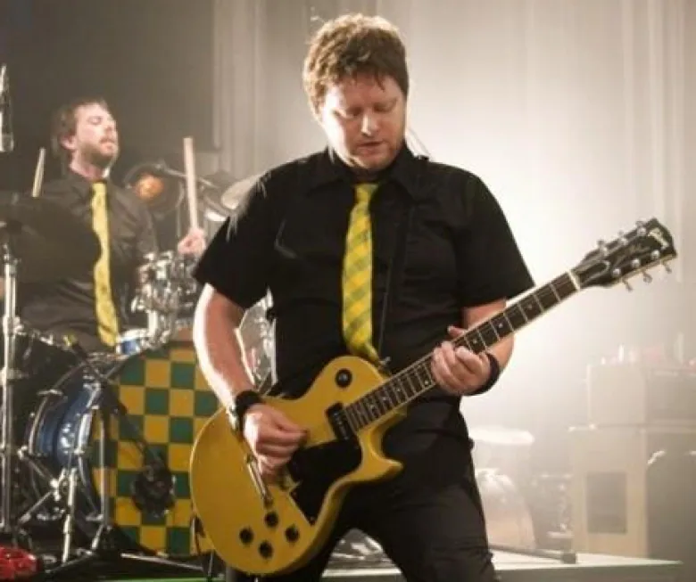

Gene Champagne in hospital with COVID-19 
Prominent musician Gene Champagne, a drummer from Hamilton who performs with Teenage Head and other rock bands, is on a ventilator in an intensive-care unit battling COVID-19.The 52-year-old's wife, Julie Champagne, said he has been on the ventilator at Joseph Brant Hospital in Burlington, Ont., since Thursday as a "last resort."In a phone interview Monday morning, she said: "He's heavily sedated, he's not conscious and we don't know the end in sight, unfortunately."Gene also plays for Canadian bands the Killjoys and Tongue Fu, and fronts his own group, The Un-Teens. Read full article →